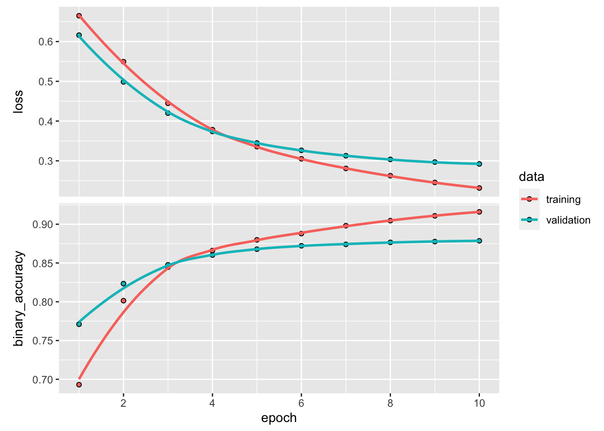

library(tensorflow)
library(keras)
library(tfdatasets)Basic text classification
This tutorial demonstrates text classification starting from plain text files stored on disk. You’ll train a binary classifier to perform sentiment analysis on an IMDB dataset. At the end of the notebook, there is an exercise for you to try, in which you’ll train a multi-class classifier to predict the tag for a programming question on Stack Overflow.
Sentiment analysis
This notebook trains a sentiment analysis model to classify movie reviews as positive or negative, based on the text of the review. This is an example of binary—or two-class—classification, an important and widely applicable kind of machine learning problem.
You’ll use the Large Movie Review Dataset that contains the text of 50,000 movie reviews from the Internet Movie Database. These are split into 25,000 reviews for training and 25,000 reviews for testing. The training and testing sets are balanced, meaning they contain an equal number of positive and negative reviews.
Download and explore the IMDB dataset
Let’s download and extract the dataset, then explore the directory structure.
url <- "https://ai.stanford.edu/~amaas/data/sentiment/aclImdb_v1.tar.gz"
dataset <- get_file(
"aclImdb_v1",
url,
untar = TRUE,
cache_dir = '.',
cache_subdir = ''
)Loaded Tensorflow version 2.9.1dataset_dir <- file.path("aclImdb")list.files(dataset_dir)[1] "imdb.vocab" "imdbEr.txt" "README" "test" "train" train_dir <- file.path(dataset_dir, 'train')
list.files(train_dir)[1] "labeledBow.feat" "neg" "pos" "unsup"
[5] "unsupBow.feat" "urls_neg.txt" "urls_pos.txt" "urls_unsup.txt" The aclImdb/train/pos and aclImdb/train/neg directories contain many text files, each of which is a single movie review. Let’s take a look at one of them.
sample_file <- file.path(train_dir, 'pos/1181_9.txt')
readr::read_file(sample_file)[1] "Rachel Griffiths writes and directs this award winning short film. A heartwarming story about coping with grief and cherishing the memory of those we've loved and lost. Although, only 15 minutes long, Griffiths manages to capture so much emotion and truth onto film in the short space of time. Bud Tingwell gives a touching performance as Will, a widower struggling to cope with his wife's death. Will is confronted by the harsh reality of loneliness and helplessness as he proceeds to take care of Ruth's pet cow, Tulip. The film displays the grief and responsibility one feels for those they have loved and lost. Good cinematography, great direction, and superbly acted. It will bring tears to all those who have lost a loved one, and survived."Load the dataset
Next, you will load the data off disk and prepare it into a format suitable for training. To do so, you will use the helpful text_dataset_from_directory utility, which expects a directory structure as follows.
main_directory/
...class_a/
......a_text_1.txt
......a_text_2.txt
...class_b/
......b_text_1.txt
......b_text_2.txtTo prepare a dataset for binary classification, you will need two folders on disk, corresponding to class_a and class_b. These will be the positive and negative movie reviews, which can be found in aclImdb/train/pos and aclImdb/train/neg. As the IMDB dataset contains additional folders, you will remove them before using this utility.
remove_dir <- file.path(train_dir, 'unsup')
unlink(remove_dir, recursive = TRUE)Next, you will use the text_dataset_from_directory utility to create a labeled TensorFlow Dataset. tfdatasets is a powerful collection of tools for working with data.
When running a machine learning experiment, it is a best practice to divide your dataset into three splits: train, validation, and test.
The IMDB dataset has already been divided into train and test, but it lacks a validation set. Let’s create a validation set using an 80:20 split of the training data by using the validation_split argument below.
batch_size <- 32
seed <- 42
raw_train_ds <- text_dataset_from_directory(
'aclImdb/train',
batch_size = batch_size,
validation_split = 0.2,
subset = 'training',
seed = seed
)As you can see above, there are 25,000 examples in the training folder, of which you will use 80% (or 20,000) for training. As you will see in a moment, you can train a model by passing a dataset directly to fit(). If you’re new to tfdatasets, you can also iterate over the dataset and print out a few examples as follows.
batch <- raw_train_ds %>%
reticulate::as_iterator() %>%
coro::collect(n = 1)
batch[[1]][[1]][1]tf.Tensor(b'"Pandemonium" is a horror movie spoof that comes off more stupid than funny. Believe me when I tell you, I love comedies. Especially comedy spoofs. "Airplane", "The Naked Gun" trilogy, "Blazing Saddles", "High Anxiety", and "Spaceballs" are some of my favorite comedies that spoof a particular genre. "Pandemonium" is not up there with those films. Most of the scenes in this movie had me sitting there in stunned silence because the movie wasn\'t all that funny. There are a few laughs in the film, but when you watch a comedy, you expect to laugh a lot more than a few times and that\'s all this film has going for it. Geez, "Scream" had more laughs than this film and that was more of a horror film. How bizarre is that?<br /><br />*1/2 (out of four)', shape=(), dtype=string)batch[[1]][[2]][1]tf.Tensor(0, shape=(), dtype=int32)Notice the reviews contain raw text (with punctuation and occasional HTML tags like <br/>). You will show how to handle these in the following section.
The labels are 0 or 1. To see which of these correspond to positive and negative movie reviews, you can check the class_names property on the dataset.
cat("Label 0 corresponds to", raw_train_ds$class_names[1])Label 0 corresponds to negcat("Label 1 corresponds to", raw_train_ds$class_names[2])Label 1 corresponds to posNext, you will create a validation and test dataset. You will use the remaining 5,000 reviews from the training set for validation.
Note: When using the validation_split and subset arguments, make sure to either specify a random seed, or to pass shuffle = FALSE, so that the validation and training splits have no overlap.
raw_val_ds <- text_dataset_from_directory(
'aclImdb/train',
batch_size = batch_size,
validation_split = 0.2,
subset = 'validation',
seed = seed
)raw_test_ds <- text_dataset_from_directory(
'aclImdb/test',
batch_size = batch_size
)Prepare the dataset for training
Next, you will standardize, tokenize, and vectorize the data using the helpful layer_text_vectorization() layer.
Standardization refers to preprocessing the text, typically to remove punctuation or HTML elements to simplify the dataset. Tokenization refers to splitting strings into tokens (for example, splitting a sentence into individual words, by splitting on whitespace). Vectorization refers to converting tokens into numbers so they can be fed into a neural network. All of these tasks can be accomplished with this layer.
As you saw above, the reviews contain various HTML tags like <br />. These tags will not be removed by the default standardizer in the TextVectorization layer (which converts text to lowercase and strips punctuation by default, but doesn’t strip HTML). You will write a custom standardization function to remove the HTML.
Note: To prevent training-testing skew (also known as training-serving skew), it is important to preprocess the data identically at train and test time. To facilitate this, the text_vectorization layer can be included directly inside your model, as shown later in this tutorial.
# creating a regex with all punctuation characters for replacing.
re <- reticulate::import("re")
punctuation <- c("!", "\\", "\"", "#", "$", "%", "&", "'", "(", ")", "*",
"+", ",", "-", ".", "/", ":", ";", "<", "=", ">", "?", "@", "[",
"\\", "\\", "]", "^", "_", "`", "{", "|", "}", "~")
punctuation_group <- punctuation %>%
sapply(re$escape) %>%
paste0(collapse = "") %>%
sprintf("[%s]", .)
custom_standardization <- function(input_data) {
lowercase <- tf$strings$lower(input_data)
stripped_html <- tf$strings$regex_replace(lowercase, '<br />', ' ')
tf$strings$regex_replace(
stripped_html,
punctuation_group,
""
)
}Next, you will create a TextVectorization layer. You will use this layer to standardize, tokenize, and vectorize our data. You set the output_mode to int to create unique integer indices for each token.
Note that you’re using the default split function, and the custom standardization function you defined above. You’ll also define some constants for the model, like an explicit maximum sequence_length, which will cause the layer to pad or truncate sequences to exactly sequence_length values.
max_features <- 10000
sequence_length <- 250
vectorize_layer <- layer_text_vectorization(
standardize = custom_standardization,
max_tokens = max_features,
output_mode = "int",
output_sequence_length = sequence_length
)Next, you will call adapt() to fit the state of the preprocessing layer to the dataset. This will cause the model to build an index of strings to integers.
Note: It’s important to only use your training data when calling adapt (using the test set would leak information).
# Make a text-only dataset (without labels), then call adapt
train_text <- raw_train_ds %>%
dataset_map(function(text, label) text)
vectorize_layer %>% adapt(train_text)Let’s create a function to see the result of using this layer to preprocess some data.
vectorize_text <- function(text, label) {
text <- tf$expand_dims(text, -1L)
list(vectorize_layer(text), label)
}# retrieve a batch (of 32 reviews and labels) from the dataset
batch <- reticulate::as_iterator(raw_train_ds) %>%
reticulate::iter_next()
first_review <- as.array(batch[[1]][1])
first_label <- as.array(batch[[2]][1])
cat("Review:\n", first_review)Review:
Great movie - especially the music - Etta James - "At Last". This speaks volumes when you have finally found that special someone.cat("Label: ", raw_train_ds$class_names[first_label+1])Label: negcat("Vectorized review: \n")Vectorized review: print(vectorize_text(first_review, first_label))[[1]]
tf.Tensor(
[[ 86 17 260 2 222 1 571 31 229 11 2418 1 51 22
25 404 251 12 306 282 0 0 0 0 0 0 0 0
0 0 0 0 0 0 0 0 0 0 0 0 0 0
0 0 0 0 0 0 0 0 0 0 0 0 0 0
0 0 0 0 0 0 0 0 0 0 0 0 0 0
0 0 0 0 0 0 0 0 0 0 0 0 0 0
0 0 0 0 0 0 0 0 0 0 0 0 0 0
0 0 0 0 0 0 0 0 0 0 0 0 0 0
0 0 0 0 0 0 0 0 0 0 0 0 0 0
0 0 0 0 0 0 0 0 0 0 0 0 0 0
0 0 0 0 0 0 0 0 0 0 0 0 0 0
0 0 0 0 0 0 0 0 0 0 0 0 0 0
0 0 0 0 0 0 0 0 0 0 0 0 0 0
0 0 0 0 0 0 0 0 0 0 0 0 0 0
0 0 0 0 0 0 0 0 0 0 0 0 0 0
0 0 0 0 0 0 0 0 0 0 0 0 0 0
0 0 0 0 0 0 0 0 0 0 0 0 0 0
0 0 0 0 0 0 0 0 0 0 0 0]], shape=(1, 250), dtype=int64)
[[2]]
[1] 0As you can see above, each token has been replaced by an integer. You can lookup the token (string) that each integer corresponds to by calling .get_vocabulary() on the layer.
cat("9257 ---> ",get_vocabulary(vectorize_layer)[9257 + 1]) # because R is onde indexed9257 ---> recipecat(" 15 ---> ",get_vocabulary(vectorize_layer)[15 + 1]) 15 ---> forcat("Vocabulary size: " , length(get_vocabulary(vectorize_layer)))Vocabulary size: 10000You are nearly ready to train your model. As a final preprocessing step, you will apply the text_vectorization layer you created earlier to the train, validation, and test dataset.
train_ds <- raw_train_ds %>% dataset_map(vectorize_text)
val_ds <- raw_val_ds %>% dataset_map(vectorize_text)
test_ds <- raw_test_ds %>% dataset_map(vectorize_text)Configure the dataset for performance
These are two important methods you should use when loading data to make sure that I/O does not become blocking.
dataset_cache() keeps data in memory after it’s loaded off disk. This will ensure the dataset does not become a bottleneck while training your model. If your dataset is too large to fit into memory, you can also use this method to create a performant on-disk cache, which is more efficient to read than many small files.
dataset_prefetch() overlaps data preprocessing and model execution while training.
You can learn more about both methods, as well as how to cache data to disk in the data performance guide.
AUTOTUNE <- tf$data$AUTOTUNE
train_ds <- train_ds %>%
dataset_cache() %>%
dataset_prefetch(buffer_size = AUTOTUNE)
val_ds <- val_ds %>%
dataset_cache() %>%
dataset_prefetch(buffer_size = AUTOTUNE)
test_ds <- test_ds %>%
dataset_cache() %>%
dataset_prefetch(buffer_size = AUTOTUNE)Create the model
It’s time to create your neural network:
embedding_dim <- 16model <- keras_model_sequential() %>%
layer_embedding(max_features + 1, embedding_dim) %>%
layer_dropout(0.2) %>%
layer_global_average_pooling_1d() %>%
layer_dropout(0.2) %>%
layer_dense(1)
summary(model)Model: "sequential"
____________________________________________________________________________
Layer (type) Output Shape Param #
============================================================================
embedding (Embedding) (None, None, 16) 160016
dropout_1 (Dropout) (None, None, 16) 0
global_average_pooling1d (Global (None, 16) 0
AveragePooling1D)
dropout (Dropout) (None, 16) 0
dense (Dense) (None, 1) 17
============================================================================
Total params: 160,033
Trainable params: 160,033
Non-trainable params: 0
____________________________________________________________________________The layers are stacked sequentially to build the classifier:
- The first layer is an
embeddinglayer. This layer takes the integer-encoded reviews and looks up an embedding vector for each word-index. These vectors are learned as the model trains. The vectors add a dimension to the output array. The resulting dimensions are:(batch, sequence, embedding). To learn more about embeddings, check out the Word embeddings tutorial. - Next, a
global_average_pooling_1dlayer returns a fixed-length output vector for each example by averaging over the sequence dimension. This allows the model to handle input of variable length, in the simplest way possible. - This fixed-length output vector is piped through a fully-connected (
dense) layer with 16 hidden units. - The last layer is densely connected with a single output node.
Loss function and optimizer
A model needs a loss function and an optimizer for training. Since this is a binary classification problem and the model outputs a probability (a single-unit layer with a sigmoid activation), you’ll use losses$BinaryCrossentropy loss function.
Now, configure the model to use an optimizer and a loss function:
model %>% compile(
loss = loss_binary_crossentropy(from_logits = TRUE),
optimizer = 'adam',
metrics = metric_binary_accuracy(threshold = 0)
)Train the model
You will train the model by passing the dataset object to the fit method.
epochs <- 10
history <- model %>%
fit(
train_ds,
validation_data = val_ds,
epochs = epochs
)Evaluate the model
Let’s see how the model performs. Two values will be returned. Loss (a number which represents our error, lower values are better), and accuracy.
model %>% evaluate(test_ds) loss binary_accuracy
0.3103359 0.8733600 This fairly naive approach achieves an accuracy of about 86%.
Create a plot of accuracy and loss over time
model %>% fit() returns a History object that contains everything that happened during training. You can use as.data.frame(history) to obtain a data.frame with metrics per epoch or plot(history) as below:
plot(history)
Notice the training loss decreases with each epoch and the training accuracy increases with each epoch. This is expected when using a gradient descent optimization—it should minimize the desired quantity on every iteration.
This isn’t the case for the validation loss and accuracy—they seem to peak before the training accuracy. This is an example of overfitting: the model performs better on the training data than it does on data it has never seen before. After this point, the model over-optimizes and learns representations specific to the training data that do not generalize to test data.
For this particular case, you could prevent overfitting by simply stopping the training when the validation accuracy is no longer increasing. One way to do so is to use the callback_early_stopping() callback.
Export the model
In the code above, you applied the text_vectorization layer to the dataset before feeding text to the model. If you want to make your model capable of processing raw strings (for example, to simplify deploying it), you can include the text_vectorization layer inside your model. To do so, you can create a new model using the weights you just trained.
export_model <- keras_model_sequential() %>%
vectorize_layer() %>%
model() %>%
layer_activation(activation = "sigmoid")
export_model %>% compile(
loss = loss_binary_crossentropy(from_logits = FALSE),
optimizer = "adam",
metrics = 'accuracy'
)
# Test it with `raw_test_ds`, which yields raw strings
export_model %>% evaluate(raw_test_ds) loss accuracy
0.3103358 0.8733600 Inference on new data
To get predictions for new examples, you can simply call predict().
examples <- c(
"The movie was great!",
"The movie was okay.",
"The movie was terrible..."
)
predict(export_model, examples) [,1]
[1,] 0.6125446
[2,] 0.4341286
[3,] 0.3514057Including the text preprocessing logic inside your model enables you to export a model for production that simplifies deployment, and reduces the potential for train/test skew.
There is a performance difference to keep in mind when choosing where to apply your TextVectorization layer. Using it outside of your model enables you to do asynchronous CPU processing and buffering of your data when training on GPU. So, if you’re training your model on the GPU, you probably want to go with this option to get the best performance while developing your model, then switch to including the TextVectorization layer inside your model when you’re ready to prepare for deployment.
Visit this tutorial to learn more about saving models.
Exercise: multi-class classification on Stack Overflow questions
This tutorial showed how to train a binary classifier from scratch on the IMDB dataset. As an exercise, you can modify this notebook to train a multi-class classifier to predict the tag of a programming question on Stack Overflow.
A dataset has been prepared for you to use containing the body of several thousand programming questions (for example, “How can I sort a dictionary by value in Python?”) posted to Stack Overflow. Each of these is labeled with exactly one tag (either Python, CSharp, JavaScript, or Java). Your task is to take a question as input, and predict the appropriate tag, in this case, Python.
The dataset you will work with contains several thousand questions extracted from the much larger public Stack Overflow dataset on BigQuery, which contains more than 17 million posts.
After downloading the dataset, you will find it has a similar directory structure to the IMDB dataset you worked with previously.
train/
...python/
......0$txt
......1$txt
...javascript/
......0$txt
......1$txt
...csharp/
......0$txt
......1$txt
...java/
......0$txt
......1$txtNote: To increase the difficulty of the classification problem, occurrences of the words Python, CSharp, JavaScript, or Java in the programming questions have been replaced with the word blank (as many questions contain the language they’re about).
To complete this exercise, you should modify this notebook to work with(the Stack Overflow dataset by making the following modifications, { })
At the top of your notebook, update the code that downloads the IMDB dataset with code to download the Stack Overflow dataset that has already been prepared. As the Stack Overflow dataset has a similar directory structure, you will not need to make many modifications.
Modify the last layer of your model to
Dense(4), as there are now four output classes.When compiling the model, change the loss to
loss_sparse_categorical_crossentropy(). This is the correct loss function to use for a multi-class classification problem, when the labels for each class are integers (in this case, they can be 0, 1, 2, or 3). In addition, change the metrics tometrics = 'accuracy', since this is a multi-class classification problem (metric_binary_accuracy()is only used for binary classifiers).When plotting accuracy over time, change
binary_accuracyandval_binary_accuracytoaccuracyandval_accuracy, respectively.Once these changes are complete, you will be able to train a multi-class classifier.
Learning more
This tutorial introduced text classification from scratch. To learn more about the text classification workflow in general, check out the Text classification guide from Google Developers.